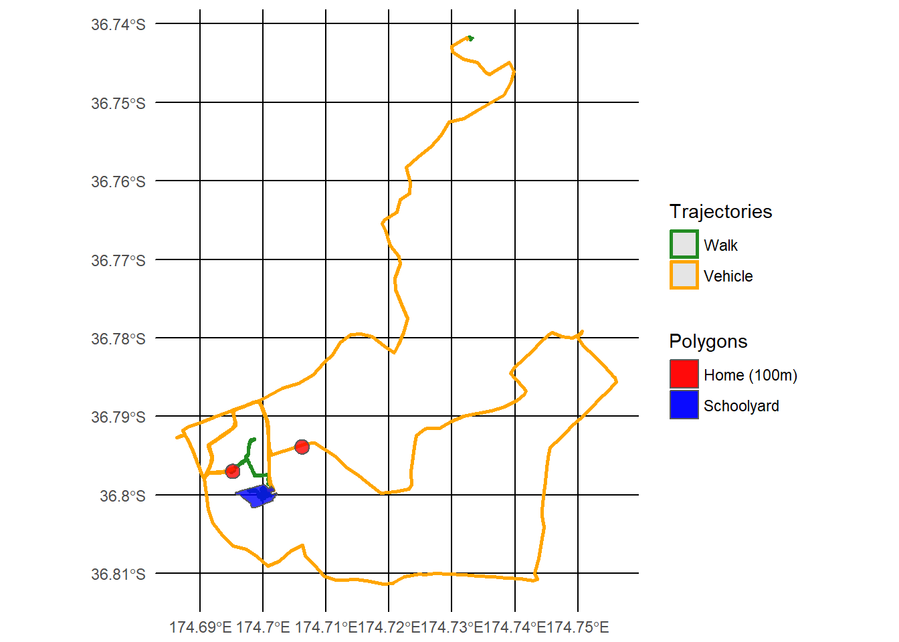

The development version of ggplot2 contains spatial plotting functions so it needs to be installed from GitHub. You will need to install devtools if you haven’t already.
devtools::install_github("tidyverse/ggplot2")The geom_sf is a new ggplot2 geom specifically for plotting simple features. You can plot points, lines, and polygons. Here is an example plotting one participant’s trajcetories, school and home on a map.
library(palmsplusr)
library(ggplot2)
data(list = c("palms", "home", "school"))
home.buffer <- palms_buffer(home, 100)
# Load default fields
palms_remove_tables()
palms_load_defaults(palms_epoch(palms))
# Build palmsplus and trajectories
palmsplus <- palms_build_palmsplus(palms)
#> [1/1] Computed palmsplus for: BC0627
trajectories <- palms_build_trajectories(palmsplus)
# Plot
ggplot() +
geom_sf(data=trajectories, aes(colour = factor(mot)), lwd = 0.9) +
geom_sf(data=home.buffer, aes(fill="h"), alpha = 0.8) +
geom_sf(data=school, aes(fill="s"), alpha = 0.8) +
scale_fill_manual(labels = c("Home (100m)", "Schoolyard"),
values = c("red", "blue")) +
scale_color_manual(breaks = c("1", "2", "3"),
labels = c("Walk", "Bicycle", "Vehicle"),
values = c("1"="forestgreen","2"="lightblue","3"="orange")) +
theme_minimal() +
labs(colour = "Trajectories", fill = "Polygons")
This is an excellent way to visualise and debug your datasets after they have been built. It is easy to loop through all participants in your dataset and save their plots to file.
# Loop through all unique identifiers
for (i in unique(trajectories$identifier)) {
# Get geometry for this person only
t <- trajectories %>% filter(identifier == i)
h <- home.buffer %>% filter(identifier == i)
s <- school %>% filter(school_id == as.numeric(participant_basis[participant_basis$identifier == i, "school_id"]))
# Plot the 3 geometry layers + add colours and title
p <- ggplot() +
geom_sf(data = t, aes(colour = factor(mot))) +
geom_sf(data = h, aes(fill = "h"), alpha = 0.8) +
geom_sf(data = s, aes(fill = "s"), alpha = 0.8) +
scale_fill_manual(labels = c("Home (100m)", "Schoolyard"),
values = c("red", "blue")) +
scale_color_manual(breaks = c("1", "2", "3"),
labels = c("Walk", "Bicycle", "Vehicle"),
values = c("1"="forestgreen","2"="lightblue","3"="orange")) +
theme_minimal() +
labs(title = i, colour = "Trajectories", fill = "Polygons")
# Save the plot to file
ggsave(file = file.path("plots", paste0(i, ".png")), plot = p, width = 18,
height = 18, units = "cm")
}